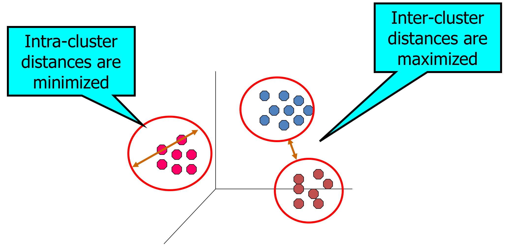
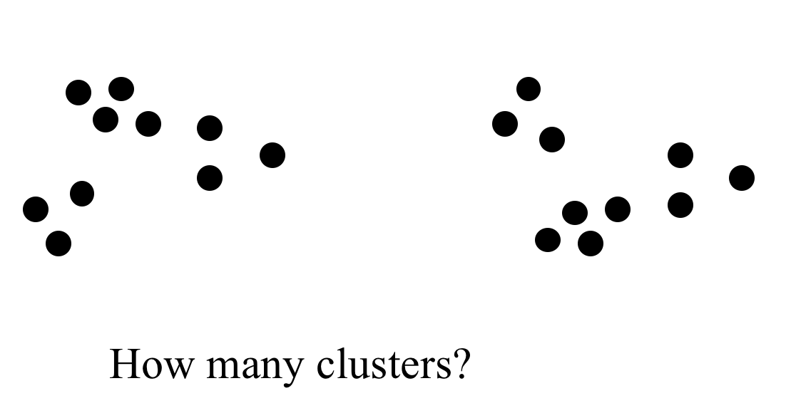
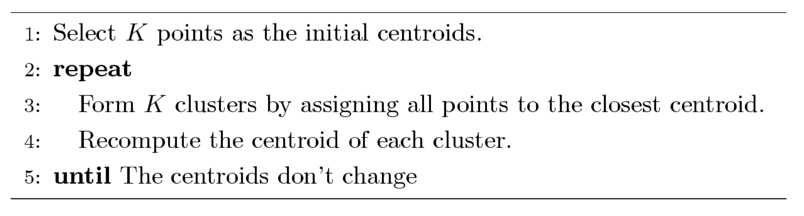
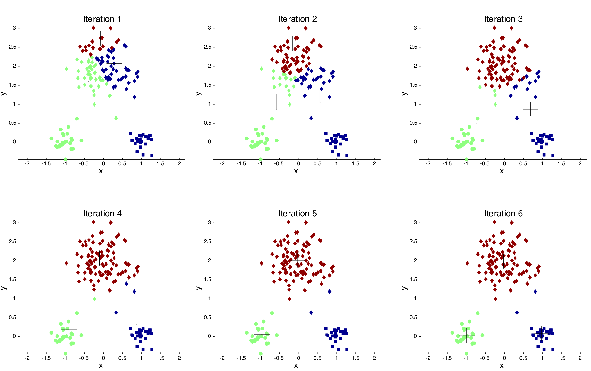
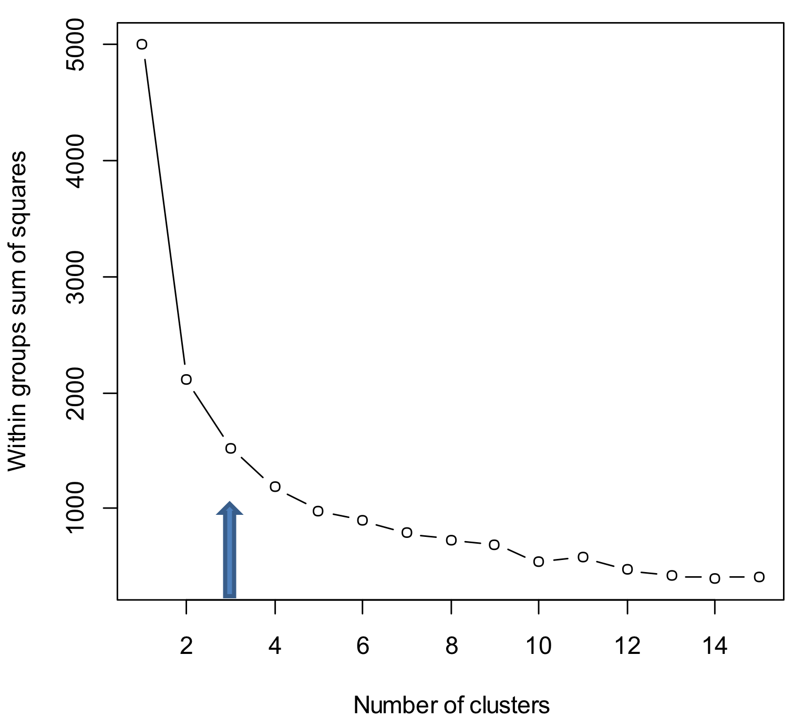
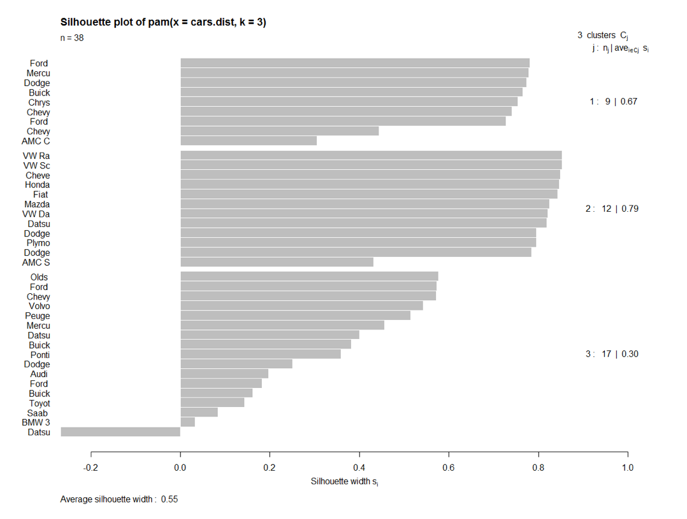

This work is licensed under a Creative Commons Attribution-NonCommercial-ShareAlike 4.0 International License.
This work is licensed under a Creative Commons Attribution-NonCommercial-ShareAlike 4.0 International License.
Big Data, Predictive Analytics and Deep Learning with Apache Spark
Chris Teplovs, Ph.D.
Day 2
Workshop overview
| Day 1: Focus on data | Introductions to each other, the workshop, Big Data, Spark and Databricks |
| Day 2: Focus on techniques |
Clustering, classification and analytic pipelines |
| Day 3: Focus on the future | Deep Learning, Neural networks, and project presentations |
Day 1 (yesterday)
| Segment | Topic |
|---|---|
| 1.1 | Workshop overview and Introductions |
| 1.2 | Introduction to Databricks |
| 1.3 | Hands-On: Databricks |
| 1.4 | Intro to Spark & DataFrames |
| 1.5 | Hands-On: DataFrames |
| 1.6 | Big Data Sets |
| 1.7 | Hands-On: Exploring Data |
Day 2 (today)
| Segment | Topic |
|---|---|
| 2.1 | Clustering Overview |
| 2.2 | k-Means and Bisecting k-Means |
| 2.3 | Hands-On: Clustering |
| 2.4 | Classification Overview |
| 2.5 | Hands-On: Classification |
| 2.6 | Model Evaluation and Tuning |
| 2.7 | Hands-On: Evaluation and Tuning |
Clustering
Cluster analysis
- finds "interesting" groups of objects based on similarity
- what typically makes a "good" clustering?
- members are highly similar to each other (i.e. minimize within-cluster distances)
- clusters are well-separated from each other (i.e. maximize between-cluster distances)
A "good" clustering solution
Applications of Cluster Analysis
- understanding
- group related documents for browsing
- group genes and proteins that have similar functionality
- group stocks with similar price fluctuations
- summarization
- reduce size of large data sets
Cluster Analysis Workflow
- Formulate the problem
- Select a distance measure (optional)
- Select a clustering procedure
- Decide on number of clusters
- Interpret and profile clusters
- Assess validity of clustering
Clustering: useful in exploratory data analysis
- Data understanding: finding underlying factors, groups, structure
- Data navigation: web search and browsing
- Data reduction: create new nominal variables
- Data smoothing: infer missing attributes from cluster neighbors
Clustering arises in many fields
- Health
- DNA gene expression (e.g. cancer, immunomarkers)
- Medical imaging
- Business
- Market segments
- Web site visitors
- Social Network analysis
- Find communities
- Information retrieval
- searh results clustered by similarity
- personalization for groups of similar users
- Speech understanding
- convert waveforms to categories
Finding the "best" clustering
Clustering algorithms
- hard (objects belong to only 1 cluster) vs. soft (multiple membership)
- hierarchical vs. non-hierarchical (flat)
- agglomerative vs. divisive
We will focus on flat and hierarchical divisive methods: k-means and bisecting k-means
FYI: Agglomerative Hierarchical
- produces a set of nested clusters organized as a hierarchical tree
- can be visualized as a dendrogram:
k-means clustering
- divisive clustering
- each cluster has a centroid (center point)
- each point is assigned to its nearest centroid
- number of clusters (k) is specified in advance
k-means algorithm
k-means iterations
k-means notables
- different initializations of centroids can yield different results
- centroid is typically the mean of the points in the cluster (c.f. medoids)
- proximity can be measured by Euclidean distance, cosine similarity, correlation, Manhattan distance, etc.
- computationally complex (relatively speaking)
Limitations of k-means
- k-means has problems when clusters are of differing sizes, densities, or are "oddly" shaped
- outliers can cause problems
Bisecting k-means
- hierarchical divisive technique
- uses k-means with k=2 at each iteration
Bisecting k-means
Loop: until the stopping condition for the number of
Clusters has
been reached
Loop: for every cluster
- Measure the total error for the
parent cluster in this
loop's iteration
- Apply K-Means Algorithm to the cluster with k=2
- Measure the total SSE error of the children clusters
compared to their parent cluster
- Choose the cluster split that gives
the lowest error and
commit this split
End Loop
End Loop
Relative Merits of Bisecting k-means
- computationally efficient (k-2)
- resulting clusters tend to be stable
However. tends to produce different clusters than k-means.
Clustering in Spark
- Why spark?
- Why not scikit-learn?
- Why not R?
- Why focus on k-means and bisecting k-means?
How many clusters?
- Theoretical, conceptual or practical issues many suggest a certain number of clusters
- ratio of total within-group variance to between-group variance vs. number of clusters
- look for "elbow" in resulting plot
How many clusters?
Good clusters?
- stable across purturbations (different methods, e.g. distance metrics)
- silhouette score (1 = good, -1 = really bad)
Silhouette plot
To the notebook!
Break!
Classification
- classification and classification types
- algorithms
- Naive Bayes
- Decision Tree
- Random Forest
- Evaluation: Train/Test and Cross-Validation
Clustering vs. Classification
- With clustering, we knew there was structure (e.g. different types of people, etc.), but we didn't know what the structure was
- clustering is unsupervised
- goal: find the structure
- usually don't know which things go together in a cluster
- may or may not know how many clusters
- usually figure out what clusters mean after the fact
Clustering vs. Classification
- Classification:
- often supervised (or semi-supervised)
- we know the labels of things (e.g. spam vs. non-spam, pop vs. classical)
- computer "learns" rule(s) of where to put things
- we don't know which features are best predictors of membership
- usually know which things go together in a cluster
- usually know how many clusters there are
- usually know what the clusters "mean" in advance
Classification is about...
- Answering or predicting something (Y) given an input (X):
- Is X a Y (or not)? (e.g. is this email spam or not?)
- What group (Y) does X belong to? (e.g. is this a forest or a mountain?)
- What is the value of Y given X? (e.g. what grade should this student get?)
Classifiers work by...
Being fed examples and learning how important certain features arises
Classification workflow
- Generate/obtain labels
- Generate/obtain features
- Select a classifier
- Train classifier
- Tune classifier
- Test classifier
Getting labels
- Painful, expensive, time-consuming
- Often human labor
- Can infer labels (e.g. predict gender by examining name of author)
- Synthetic datasets
Features
- Same ideas as in clustering
- Some set of "descriptions" for an object: explicit and inferred (calculated)
Clustering vs. Classification
- Clustering tries to separate groups by using (dis)similarity
- Classification tries to find important features for distinguishing group membership
Some popular classifiers
- k-Nearest Neighbor (kNN)
- Logistic Regression
- Naive Bayes
- Decision Tree
- Random forest
- SVM
- Neural Networks ("deep learning")
Our focus: Decision Trees and Random Forests
Decision Trees
I'm thinking of an animal: ask me some yes/no questions.
Decision Trees
- Ask the question with the most valuable answer first
- "If I knew the answer to this, how much closer to the solution would I be?"
- Solutions that divide the space 50/50 are better than solutions that divide the space 98/2
INSERT DT VIS HERE
Decision Tree Advantages
- easy to Interpret
- prediction process is obvious
- can handle mixed data types
Decision Tree Limitations
- expensive to calculate
- tendency to overfit
- can get large
Random Forest
- currently a favorite technique
- can fix the problem of one tree by using many
- various ways to randomize: pick different subsets of data, pick different features
How do you visualize a random forest?
Classification Summary
- ubiquitous
- possibly dangerous
- good for when we know somerthing about the structure
- same type of "pipeline" as clustering